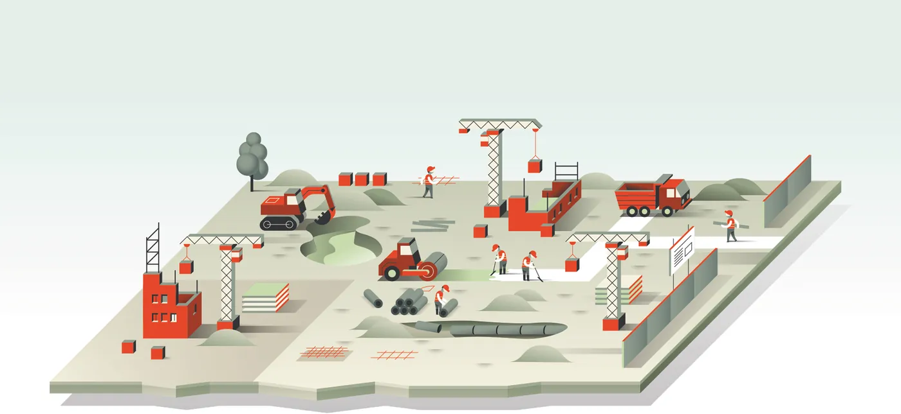
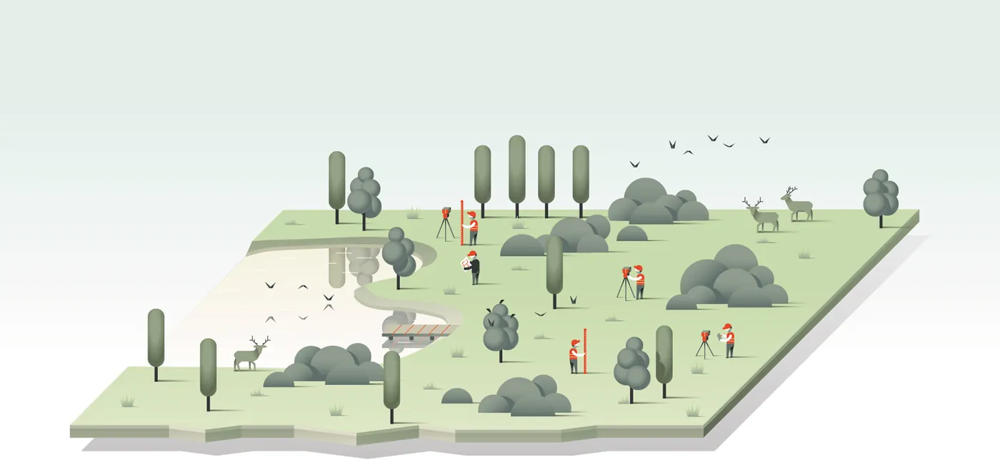

Forside/Tjenester
Tjenester
A/STAB hjelper deg gjennom hele prosessen. Vi avklarer omfang og tid før vi starter, og du har én kontakt gjennom saken.
01 / Eiendomsutvikling
Reguleringsplan og eiendomsvurdering
Vi avklarer hva tomta kan brukes til før det investeres i tegninger. Reguleringsplanarbeid og eiendomsvurdering gjøres av folk som også jobber med prosjektering og utførelse.
- Reguleringsplan og planprosess.
- Eiendomsvurdering av tomt og bygg.
- Mulighetsstudie før beslutning.

02 / Prosjektering
Fagfolk som snakker sammen
Brannteknisk (RIBr) og byggteknisk prosjektering leveres i samme hus, så kravene ikke kolliderer mellom fagene.
Brannteknisk prosjektering
Brannkonsept og branntegninger, med dokumentasjon som entreprenøren kan bygge etter.
Byggteknisk prosjektering
Konstruksjon og byggteknikk, koordinert med arkitekt og entreprenør.
Ansvarlig søker
Søknad, nabovarsel og oppfølging mot kommunen gjennom hele byggesaken.

03 / Infrastruktur
Vei, vann og avløp
VAO-prosjektering for utbyggingsprosjekter, med plan for overvann og tilknytning. Vi prosjekterer for drift også – ikke bare for ferdig befaring.
- VAO-prosjektering.
- Overvann og tilknytning.
- Dokumentasjon ved overlevering.
04 / Utførelse
Kontroll mens det skjer
Arbeidet dokumenteres mens det pågår. Da slipper du å finne ut av avvikene etter at bygget er tatt i bruk.
| Fase | Hva A/STAB gjør | Hva du får |
|---|---|---|
| Avklaring | Gjennomgang av tomt, krav og rammer | Notat med muligheter og risiko |
| Prosjektering | Prosjektering og søknad | Tegninger, søknad og brannkonsept |
| Utførelse | Kontroll og oppfølging | Sjekklister og avvikslogg |
| Overlevering | Sluttdokumentasjon | FDV og samledokumentasjon |
Skal vi avklare saken først?
Vi sier hva det koster før vi begynner, og hva som må avklares underveis.